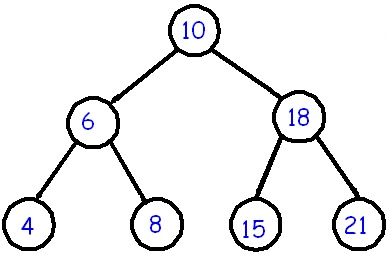

Tree traveral questions

Binary search tree. Source: cs.cmu.edu/~adamchik
What is the worst-case runtime of an in-order traversal of an entire tree tree? You may assume that the "visit" operation on each node takes constant time. Give your answer in Θ notation as a function of n (the number of nodes).
For the questions below, the Node class has three fields:
E data;
Node<E> left;
Node<E> right;
Write a method
void inOrder(Node<E> root)
that takes the root of a binary tree as a parameter and prints all elements of the tree in-order (one per line).
Write a method
void levelOrder(Node<E> root)
that takes the root of a binary tree as a parameter and prints all elements of the tree in level-order (one per line).